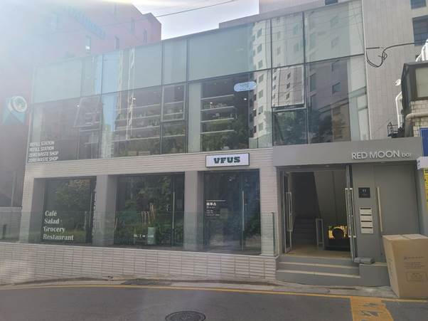
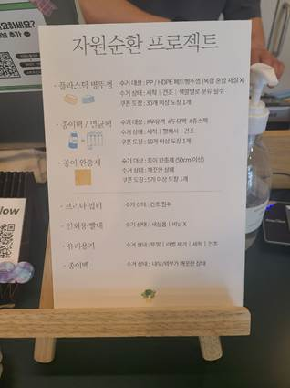
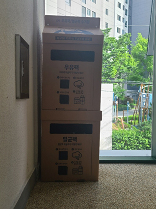
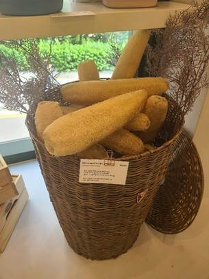
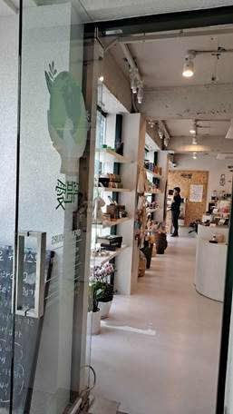
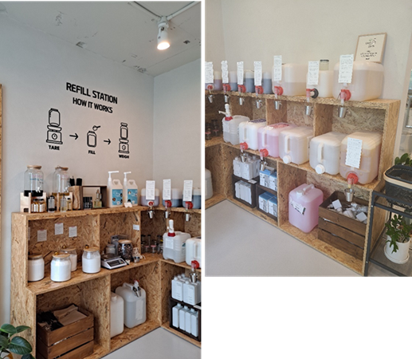
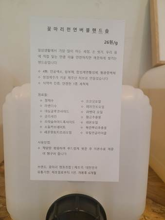
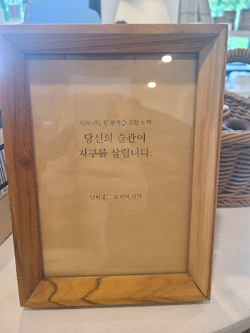

지구를 위한 작은 움직임, 덕분애 제로웨이스트샵
#제로웨이스트샵 #리필스테이션 #플라스틱프리 #업사이클링 #친환경 #지속가능한_삶
“내 주변을
친환경적으로 만들기, 여기서 쉽게 하세요.”
강남역 8분 거리에 위치한 제로웨이스트샵
제로웨이스트샵은 점점 늘어나고 있지만, 아직 주변에서
흔히 찾아볼 수 없다. 따라서 제로웨이스트샵의 접근성
또한 매우 중요하다. 덕분애는 강남역과 신논현역 근처에
위치한 제로웨이스트샵으로 역에서 5~10분 정도 거리에
위치하고 있어 접근성이 좋다. 집 주변에 제로웨이스트샵이
없다면, 접근성이 좋은 덕분애 제로웨이스트샵을 추천한다.
캡션: 덕분애 제로웨이스트샵
외관이다.
종이팩을 올바르게 세척하고 건조하는 작은 습관
신논현역에서 내려 5분 정도 걷다보면 통창 유리로 된 2층
건물을 볼 수 있다. 1층은 비건 식당, 카페가 있으며, 계단을 통해 2층으로 올라가면 덕분애 제로웨이스트샵에 도착한다. 계단을 따라 올라갔을 때 제일 먼저 눈에 띄는 것은 우유팩 모양의 박스이다.
이 박스는 세척하고 건조된 우유팩, 두유팩, 주스팩 등을 넣는 공간으로, 덕분애는
이 종이팩들을 모아서 화장지 등으로 바꾸는 업사이클링 활동에 참여하고 있다. 일반 종이와 다르게 멸균팩과 종이팩은 업사이클링에 중요한 자원이지만 아직 분리수거장에서 별도로 수거되고 있지 않은 상황이다. 평소에 우유팩과 멸균팩을 잘 모아두었다가 덕분애를 방문할 때
종이팩을 제출하면 쿠폰 도장을 받을 수 있다. 이 도장을 모으면 상품을 얻을 수 있고, 또 버려지는 팩을 재활용할 수 있다는 점에서 환경에도 도움이 된다. 이러한
매력에 이끌려 많은 사람들이 덕분애의 종이팩 수거 프로젝트에 많이 동참하고 있다. 하지만, 우유팩과 멸균팩을 세척하고 건조시키지 않으면 곰팡이가 생길 수 있어 재활용이 불가능하기 때문에 선별하는 과정을 거친다고 한다. 이러한 수고를 덜어드리기 위해 깨끗이 닦아 충분히 건조시킨 후 가져가야 한다. 종이팩 외에도 덕분애는 플라스틱 병뚜껑
등도 수거하고 있다.
왼쪽 캡션 : 입구에 위치한
종이팩 수거함이다.
오른쪽
캡션: 덕분애에서 진행하고 있는 자원순환(업사이클링) 프로젝트이다.
내 옆에 친환경 물품을 두는 작은 습관
덕분애의 내부는
흰색 바탕의 공간으로, 다양한 친환경 제품들이 정리되어 있었다. 사진과
같이 통창 유리를 따라 상품들이 일렬로 깔끔하게 진열되어 있으며,
상품마다 자세한 설명이 있기 때문에 처음 접한 사람도 쉽게 이해할 수 있도록 하였다. 아래
사진의 상품은 마치 바게트빵처럼 보여 어디에 쓰일지 몰랐는데 설명을 통해 원하는 만큼 잘라서 사용할
수 있는 친환경 소재의 수세미임을 알 수 있었다.
왼쪽 캡션 : 통창 유리를 따라 상품들이 일렬로 깔끔하게 진열되어있는 덕분애 내부이다.
오른쪽
캡션: 원하는 만큼 잘라서 사용할 수 있는 친환경 소재의 수세미이다.
덕분애 제로웨이스트 샵에는 수세미 외에도
플라스틱 칫솔을 대체하는 대나무 칫솔, 유리, 대나무로 만든
빨대 등의 제로웨이스트 상품과 친환경 핸드크림 및 비누 등의 비건 상품을 포함하는 다양한 상품들이
있었다. 그리고 가게 한 쪽에는 리필스테이션이 있어서 직접 공병을 가져가거나 매장에 비치된 공병을 구입하여
세제, 견과류, 디퓨저를
담고 그램 수에 따라 비용을 지불하는 방식으로 운영 중이. 이러한 방식은 “Refill station How it works” 아래에 그림으로도 표현되어 있어서, 처음 접하는 사람도 쉽게 적응할 수 있도록 도와준다.

캡션: 덕분애 내에 있는 리필 스테이션이다.
또한, 모든 상품에는 성분표, 사용방법
등이 적힌 종이가 붙어있기 때문에 소비자가 직접 보고 구매할 수 있다. 성분을 잘 모르더라도 걱정할
필요가 없다. 덕분애 제로웨이스트 샵에서 직접 써본 후 좋은 것들만 엄선해서 판매하기 때문에 소비자들은 양질의 상품을 선택할 수
있다. 종종 덕분애 제로웨이스트 샵은 인스타그램을
통해 품질이나, 친환경성 등을 고려한 제품들을 소개하기도 하는데 이를 참고해도 좋을 것 같다.
캡션 : 상품에 성분표, 사용 방법 등이 적힌 종이가 붙어 있다.ㄱㄷ
액자에서도 “당신의 습관이 지구를 살립니다.”라는 슬로건은 덕분애 인스타그램 내 대부분의 게시물뿐만 아니라 가게 내의 액자에서도
확인할 수 있다. 아직 5월임에도 30도까지 올라가는 높은 온도는 해가 갈수록 기후 변화가 심해지고 있음을 우리가 직접 피부로 느낄 수 있게 한다. 그만큼 지구온난화와 환경오염은 더 이상 외면할 수 없게 되었다. 우리가
제로웨이스트 상품을 쓰며 플라스틱의 사용을 줄이고, 친환경
성분으로 만든 상품들을 내 옆에 두고 사용하는 이런 작은 습관들이 모여서 환경 문제를 해결하고 지구를 살릴 수 있을 것이다.
덕분애 제로웨이스트 샵은
“기후위기로
가장 큰 피해를 받는 사람은 사회적으로 경제적으로 소외된 이웃들입니다.”
라고 말한다. 즉, 우리가 당연하게 생각하는 자원의 사용은 기후위기를 초래하며 그 기후위기의 피해는 사회적 약자 계층에게 더욱
빠르고 직접적으로 영향을 미친다. 지구를 살리기 위해, 모든
사람이 함께 살아가는 세상을 위해 우리가 매일 사용하는 칫솔부터 조금씩 바꿔나가는 것은 어떨까? 덕분애 제로웨이스트샵에서
이루어지는 작은 습관의 변화 덕분에 앞으로 우리가 지속가능한 세상 속에서 살아갈 수 있기를 바란다.

캡션: 가게 내의 액자에 덕분애 제로웨이스트
샵의 슬로건인 “당신의 습관이 지구를 살립니다.”가 적혀있다